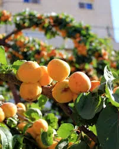
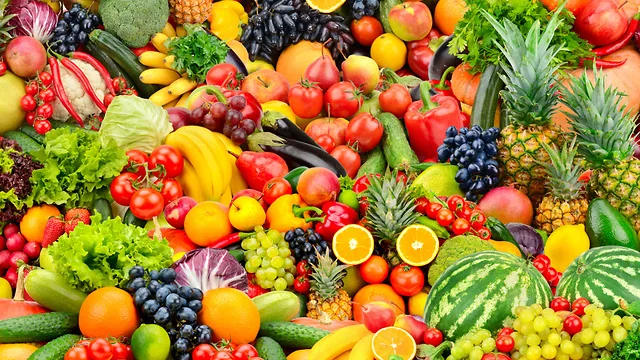

מצווה להעדיף פירות מגידולי ארץ ישראל על פני פירות חוץ לארץ משום: א.חיבת הארץ (ק"ו מהמצווה לנשק את עפרה). ב. משום ישוב א"י שעל ידי זה יתרבה גידולים מא"י[1]. ג. משום הקדושה שיש בפירות א"י[2].
ישנו מכתב נפלא מכתב שכתב על כך ה'ערוך השולחן' מיום ח' אייר תרנ"ו:
"הנה בעיקר הענין אותם המבכרים פרי בן השנואה (חו"ל) על אתרוגי בן האהובה (א"י) קצר עטי אשר אתי לתאר שפלות נפשם ופחיתות דרכם ורוע לבבם, והסרת מסוה הבושה מעל פניהם הדומים לפני הדור בעקבא דמשיחא.
מה נאמר ומה נדבר! האלהים מצא את עוונינו להיות ללעג ולקלס בפני עצמנו ובפני אחרים (הגוים). מי ראה כזאת ומי שמע כאלה? והן אף אם גם לא היה שום חשש (מורכב) בפרי קורפ"ו (אתרוג חו"ל), הנכון לאיש הישראלי לבלי לבכר פרי ארצנו הקדושה על פרי ארץ העמים? איה כבודו יתברך? איה כבוד התורה הקדושה, שבפסוקים רבים השתבחה בשבחה של ארץ ישראל? איה כבוד משה רבינו שהתחנן "אעברה נא ואראה את הארץ הטובה"?
ומה שונים דרכנו מדרכי רבותינו חכמי התלמוד שלהי כתבות דר' אבא מנשק כיפי דעכו, ר' חייא מגנדר בעפרה שנאמר כי רצו עבדיך את אבניה ואת עפרה יחוננו'. ואלו האנשים מגנדרים בעפרא דארץ אחרת, ומנשקים פירותיהם, וישליכו (לבוז) פריה וטובה של ארץ הקדושה ככלי אין חפץ בו".
[2]. ראה מה שהארכנו בזה בספרנו פירות הילולים, עובדות על ר' אהרן מבעלז'.

מסופר על האמרי אמת: משגדל ועמד על בוריו התלקחה חיבתו העזה לארץ ישראל ביתר שאת. ראינו בו, אמרו החסידים, שהוא ממש חולה אהבה לארץ ישראל. כל רגב עפר וכל חפץ הפעוט ביותר מארץ ישראל היה חביב עליו כמוצא שלל רב. היו זמנים שנהג דרך קבע להטביל את פרוסת "המוציא" שלו בשמן זית מתנובת הארץ. אף כאשר שלחו חסידים מארץ ישראל לאביו ה"שפת אמת" זי"ע, מזמרת הארץ, כמו שמן זית לחנוכה, יין לקידוש ולהבדלה, אתרוג לחג הסוכות וכיוצא, היה השפ"א אומר לתת אותם לרבינו זצ"ל, בהטעימו: "ער האט דאך ליעב ארץ ישראל" ("הרי הוא אוהב את ארץ ישראל!").

בספר דברי שלמה (מטשורטקוב עמ' קט"ז) מספר על מנהגם לאכול מפירות ארץ ישראל בט"ו בשבט, פירות אלו הביאו בחורף הקשה לתוך העיירות הקטנות והנדחות את אוירה הזך והחם של ארץ ישראל, שהעיר את הלבבות לאהבת הארץ ולתשוקה עזה לעלות אליה, וגם בחשכת הגלות האיר החג מאורה של ארץ ישראל וחימם והפיח רוח של תקוה לגאולה השלימה עכ"ד.

רבי אברהם דוב אוירבך, ה'בת עין', עלה לארץ בשנת תקצ"ב (1832) וקבע את מושבו בצפת, שהיתה בימים ההם מרכז החסידים בארץ ישראל. מיום עלותו לארץ קיבל עליו, שלא לאכול אלא מפירות ארץ הקודש, והתמיד באורח החיים שקיבל על עצמו בדבקות של חסיד אמיתי.
לא עברו ימים מרובים, ושנת בצורת קשה פקדה את כל אזורי הארץ. ברוב מצוקתם, נאלצו אנשי צפת לאפות לחמם מקמח שהובא מחוץ לארץ. באותה שנה סבלו עניי העיר מחוסר מזון, שהיה יקר מאוד, ונאלצו לכלכל עצמם במועט שבמועט. אך יותר מכל בני הקהילה חש רבי אברהם דוב רעב של ממש בימים ההם, כיון שסירב להביא לפיו לחם שנאפה מקמח מיובא מבחוץ.
פעם הפצירו בו מקורביו, שיאות לקבל מטען של קמח, שהובא במאמצים מרובים מעבר לים, והיה בו כדי מחית בני ביתו לכמה חדשים. אולם הוא דחה בתקיפות את הצעת מקורביו ואמר בין השאר: בפרשת "בהר" מצינו קושיית הבריות: "מה נאכל בשנה השביעית?", ועל כך משיבה התורה: "וצִויתי את ברכתי לכם" וגו´. נשאלת השאלה: מדוע לא נאמר בכתוב: "בשנה השביעית תייבאו תבואה מחוץ לארץ"? נמצאנו למדים מכאן, שעלינו לבסס את קיומנו ומחייתנו על תנובת הארץ, וככל שנתמיד בדרך זו, נצליח להתגבר על הקשיים הנערמים על דרכנו...